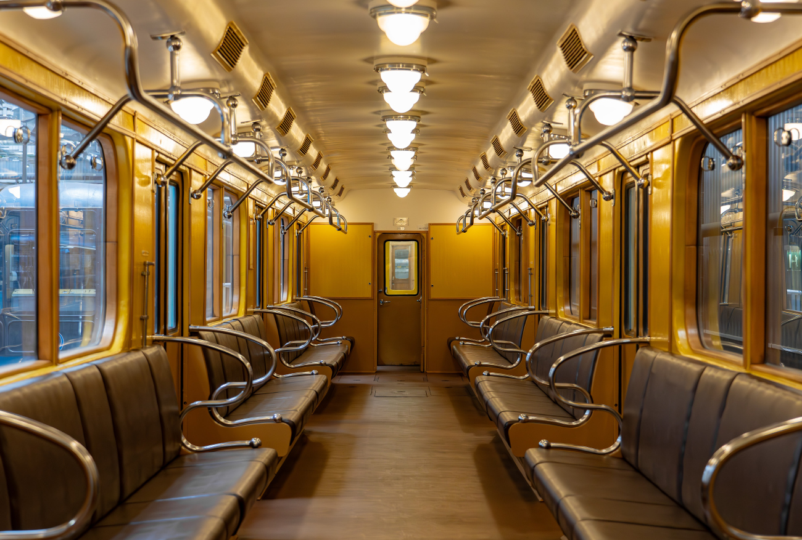
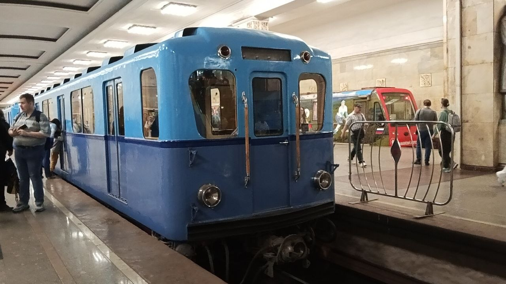
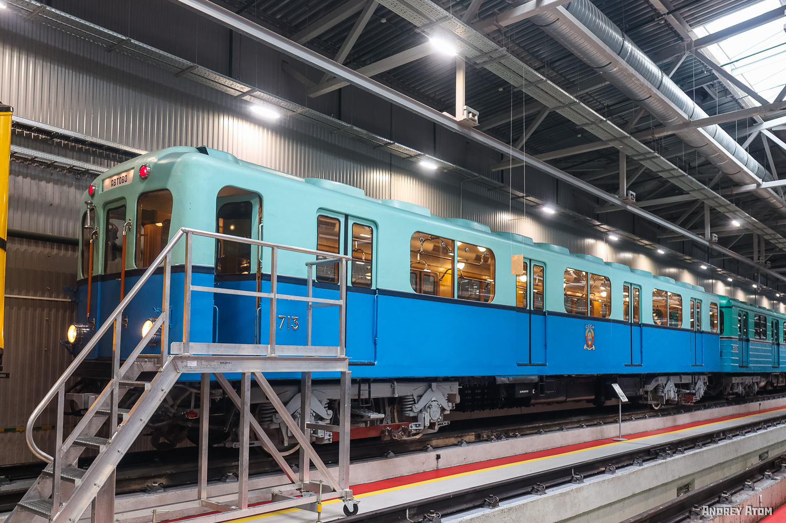
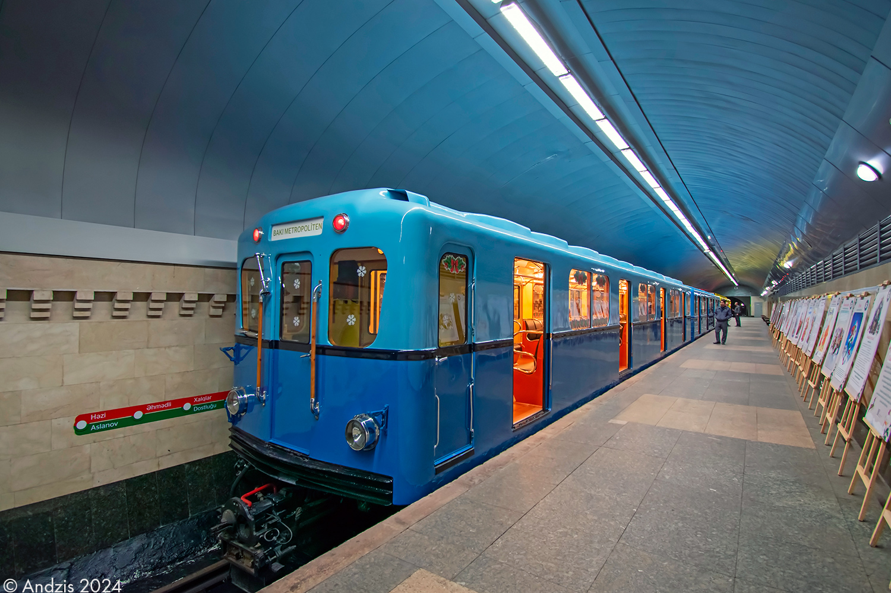

Вагон типа Г (81-701)
Вагон типа Г — первый серийный моторный вагон Московского метрополитена, выпускавшийся Мытищинским машиностроительным заводом в 1939–1940 и 1947–1955 годах. Название «Г» дано в честь Горьковского радиуса Московского метрополитена. Это был качественно новый шаг в развитии отечественного метровагоностроения: впервые применено реостатное электрическое торможение, групповые контакторы и повышенная скорость движения.
Всего было построено 425 вагонов этого типа. Принципиальное отличие от предшественников — все вагоны были моторными, прицепные вагоны для этого типа не строились. Вагоны эксплуатировались в Московском и Ленинградском метрополитенах до 1983 года, а также передавались в Баку.
Производство
| Параметр | Значение |
|---|---|
| Обозначение | 81-701 |
| Годы постройки | 1939–1940, 1947–1955 |
| Страна постройки | СССР 🇷🇺 |
| Заводы | Мытищинский машиностроительный, «Динамо» им. С. М. Кирова |
| Составов построено | 60–70 |
| Вагонов построено | 425 |
| Нумерация | 201—206 (с 1945: 301—306), 307—725 |
Важно: Вагоны типа Г — первые в отечественном метро, которые имели ставшую впоследствии традиционной сине-голубую окраску, и первые, в которых появились традиционные для метрополитенов СССР до конца 1970-х годов круглые светильники с плафонами и лампами накаливания.
Технические характеристики
| Параметр | Значение |
|---|---|
| Род тока и напряжение | 750 В постоянного тока |
| Типы вагонов | Мг (моторный головной) |
| Полная вместимость | 264 человека |
| Сидячих мест | 52 |
| Длина вагона | 19 110 мм |
| Ширина | 2 700 мм |
| Высота | 3 700 мм |
| Диаметр колёс | 900 мм |
| Ширина колеи | 1 524 мм |
| Масса тары | 42 т (опытные) / 43,7 т (серийные) |
| Материал вагона | Сталь ДС |
| Выходная мощность | 4 × 83 кВт |
| Тип ТЭД | ДК-102В (1939, опытные), ДК-102Г (1939—1940), ДК-102Д (1947—1955) |
| Макс. скорость | 75 км/ч |
| Макс. служебная скорость | 70 км/ч |
| Ускорение при пуске | 1,0 м/с² |
| Ускорение при торможении | 1,0 м/с² |
| Электрическое торможение | Реостатное |
| Тормозная система | Тормоз Вестингауза |
| Системы безопасности | САУМ, САММ, АЛС-АРС (оборудованы в 60-е и 70-е годы) |
Проектирование
В 1936 году, ещё до пуска в эксплуатацию участка «Площадь Свердлова» — «Сокол», Управление Московского метрополитена приступило к составлению задания на проектирование моторных вагонов более совершенной конструкции, чем вагоны типа «А».
Основные требования к новому типу
⚡ Групповые контакторы
Замена индивидуальных контакторов в силовой цепи тяговых электродвигателей на групповые — меньше электромагнитных вентилей, блокировочных контактов и объёма ремонта.
🚀 Повышение скорости
Конструкционная скорость увеличена до 75 км/ч (у типов А и Б — 65 км/ч), ускорение и замедление — до 1 м/с² (у А и Б — 0,7 м/с²).
🛑 Электрическое торможение
Применение реостатного торможения для снижения износа колодок и бандажей, а также уменьшения выделяющейся пыли, неблагоприятно влияющей на электрооборудование.
🌊 Плавный пуск
Осуществление более плавного пуска поезда.
⚖️ Снижение массы
Уменьшение массы тары за счёт применения легированной стали и более совершенных тележек.
🚫 Отказ от прицепных
Введение электрического торможения и повышение ускорения обусловили решение не строить прицепные вагоны — поезда составлялись только из моторных вагонов.
Конструктивные особенности: Электровагоны типа Г имели более округлённые очертания, чем вагоны типов А и Б. Длина кузова увеличена на 370 мм (до 18 770 мм), при этом длина кабины машиниста уменьшена на 100 мм, что позволило увеличить длину пассажирского салона на 470 мм. Длина по центрам автосцепок и база увеличены на 200 мм. Масса опытного моторного вагона с электрооборудованием — 42 т.
Опытные вагоны типа Г
Первые шесть вагонов типа Г (№ 201—206, позже № 301—306), выпущенные в 1939—1940 годах, были опытными. Именно на них отрабатывались конструктивные решения, ставшие впоследствии серийными.
Уникальная особенность: Опытные вагоны имели смешанную продольно-поперечную схему размещения диванов — уникальную для отечественного метро. Это решение не получило дальнейшего распространения.
История эксплуатации
Проектирование
Моторные вагоны типа Г проектировались в 1937—1939 годах.
Первая партия
Мытищинским вагоностроительным заводом и заводом «Динамо» выпущено 6 моторных вагонов типа Г, получивших номера 201—206 (в 1945 году перенумерованы в № 301—306).
Первый пробный рейс
С Мытищинского вагоностроительного завода на Московский метрополитен прибыл первый моторный вагон типа Г и совершил пробный рейс на участке «Сокольники» — «Центральный парк культуры и отдыха им. Горького».
Испытания поезда
Из пяти моторных вагонов составлен поезд, который испытывался в августе-сентябре 1940 года.
Начало опытной эксплуатации
Началась опытная эксплуатация поезда на Горьковской линии.
Серийный выпуск
Возобновлён серийный выпуск вагонов типа Г. Всего выпущено 425 вагонов.
Ленинградский метрополитен
Вагоны типа Г эксплуатировались в Ленинградском метрополитене.
Передача в Баку
Три вагона (№ 353, № 355 и № 479) отправлены из Москвы в Баку, где использовались как сопровождение путеизмерителя.
Конец регулярной эксплуатации
Вагоны типа Г эксплуатировались в Московском и Ленинградском метрополитенах до 1983 года.
Служебная эксплуатация
Последние 4 вагона типа Г (№ 375, № 380, № 419 и № 448) использовались как вагоны сопровождения дефектоскопа депо «Красная Пресня».
Сохранившиеся экземпляры
До наших дней сохранилось несколько вагонов типа Г в России, Азербайджане и Армении.
Москва и Московская область
Г № 530
Восстановлен к 80-летию Московского метрополитена. Базируется в ТЧ-3 «Измайлово».
- 11 мая 2025 года к 90-летию метрополитена временно установлен на рельсах в сквере у станции «Сокольники»
Г № 649
Проходил восстановление в 2022–2025 годах.
- В 2025 году установлен перед проходной АО «Метровагонмаш» (город Мытищи)
Г № 661
С 2021 года проходит восстановление.
- Передан в Музей транспорта Москвы
Г № 623
Находится в электродепо «Выхино».
- Используется в роли сарая
Санкт-Петербург
Г № 713
Прошёл реставрацию в 2020 году.
- Находится в депо ТЧ-1 «Автово» Петербургского метрополитена
Баку
Г № 479
Восстановлен к 50-летию Бакинского метрополитена.
- Единственный сохранившийся вагон из трёх, отправленных в Баку в 1980 году
Фотогалерея

📸 WOM(transphoto)

📸 pfandrom

📸 Andrey Atom(transphoto)

📸 andzis(transphoto)
Нажмите на фото для увеличения
«Вагоны типа Г стали первым серийным типом моторных вагонов Московского метро. Именно они заложили традиции сине-голубой окраски, круглых светильников и электрического торможения, которые определили облик отечественного метрополитена на десятилетия вперёд».